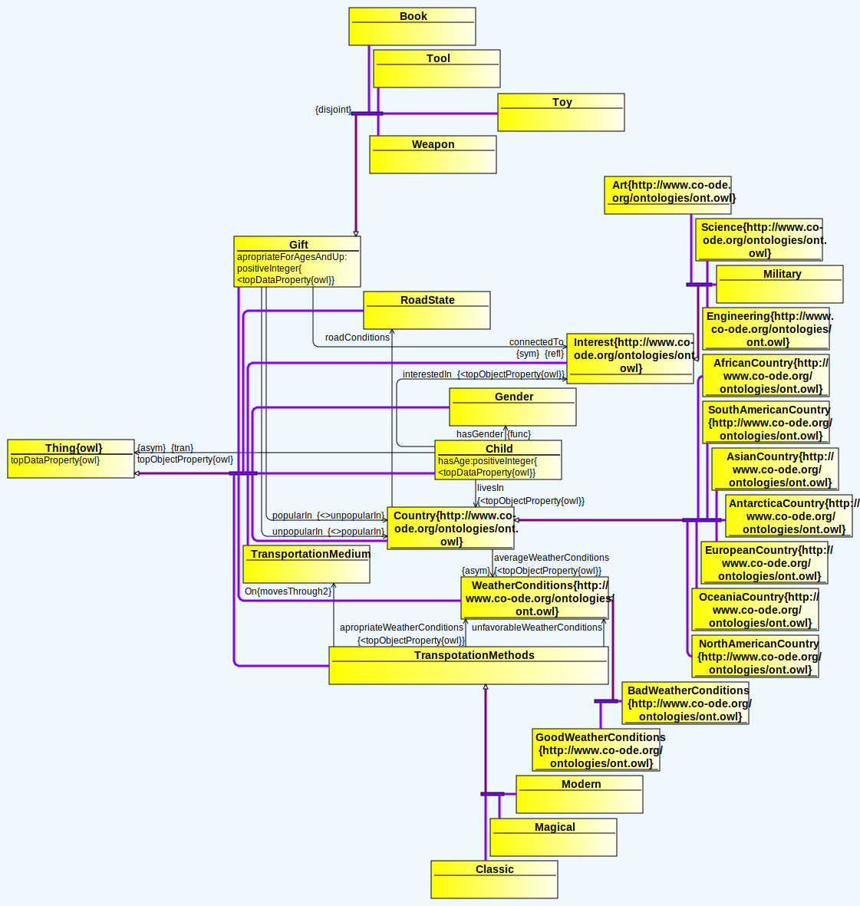
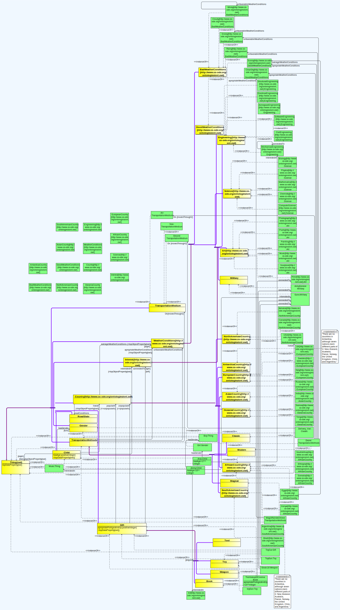

Members:
- Marian-Sergiu Nistor (MSD1)
- Andrei Ghiran (MSD1)
Scenario & Knowledge Model Description
The use case/scenario considered when modelling the ontology revolves around the idea
of distributing appropriate items (toys) to the considered actors (children), while taking
into consideration several factors, such as weather conditions in their country of
residence (e.g. Australia is sunny, on average), and their interests (e.g. a child that
likes aerospace engineering would likely be interested in an airplane toy).
Based on the ontology, one could use relationship-oriented computational methods in order to achieve the
aforementioned task, such as classical inference algorithms, machine learning algorithms
(e.g. graph clustering algorithms), or modern deep learning methods (e.g. graph neural nets).
Contributions:
- Marian-Sergiu Nistor:
- HTML Documentation
- Annotations (e.g. The Antartica comment for UK, Chile, Norway)
- Assertions
- Classes, subclasses, and their instances:
- WeatherConditions (Weather conditions for a specific country):
- GoodWeatherConditions
- BadWeatherConditions
- Country (Country of residence for the child):
- AfricanCountry
- AntarticaCountry
- AsianCountry
- EuropeanCountry
- NorthAmericanCountry
- SouthAmericanCountry
- OceaniaCountry
- Interest (The child's interest):
- Andrei Ghiran:
- Predicates and assertions:
- TheHistoryOfCinema connectedTo Film
- Drone apropriateWeatherConditions Sunny
- Drone unfavourableWeatherConditions Snowy
- Jonny hasGender Boy
- Johnny wasNaughtyOrNice Nice
- Classes, subclasses, and their instances:
- ChildBehaviour
- TransportationMedium (The medium of transporation, e.g. air)
- Child (The child instance)
- Gender (A child's gender)
- Gift (The gift to be received by a child):
- TransportationMethods (The deliverer's method of transporation):
Ontology Visualization
Without individuals:

With individuals:
